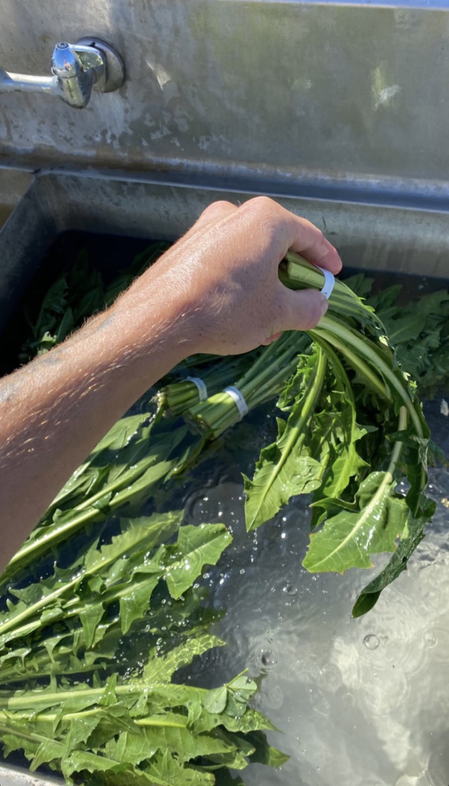

Hello, and welcome to my personal webpage!
This is me, pictured above, in Big Sur, California.
Who are you? And what is this?
I am a 28 (almost 29) year old artist and undergraduate Architecture student. I live in Philadelphia, Pennsylvania.
I am an avid trail runner and adventure cyclist. I also love surfing and Nordic skiing.
I enjoy tennis, but I am not great at it. I love to go to baseball games.
I make experimental music which you could call "noise" or sometimes "prepared guitar" music. My most recent effort, "Human Learning" was released by Tapes Scree, a cassette tape record label in Seattle, Washington. You can listen to and purchase it Here.
I haven't been playing shows lately, but I am open to it. I would really like to play shows and meet new friends in Europe, and especially in Norway and Sweden. If you can assist with making this a reality, please do get in touch.
I am in the midst of an effort to divest from social media (and smart phone ownership) entirely.
The reasons for doing so are ultimately probably boring, and I'm not sure anybody wants to read my cliché, Luddite rant...
But here are the main points, if you are curious:
1. Social media websites and applications are intentionally designed to be addictive and to make the user feel all kinds of bad feelings.
2. I do not want to be constantly tracked and bombarded with advertisements, nor have my data bought and sold all over the place.
3. Merely using these platforms gives money to people I don't want to give money to, if I can help it.
4. These websites engineer social dynamics that are reactive and antagonistic, because those kinds of interactions trigger something in our puny brains which is very hard to resist engaging with -- engagement means money. I feel that these modes of interaction are ruthlessly destroying our sense of shared reality and essentially prodding our world to devolve into insanity.
5. I simply feel badly when I visit a website like Instagram. If I no longer feel a sense of enjoyment or utility, there's no reason for me to continue using it.
6. Lastly, my personal sense of well-being and mental clarity is much greater if I do not look at screens very much.
So anyway, I am gathering contact information for people I've met through the internet, and planning to buy a Sunbeam Orchid flip phone soon. I have wanted one for a while, and my friend Ana has one.
I am also looking into options to have a landline telephone as well... which seems kind of silly but also actually cool and fun.
Ok, enough of that.. si dramatique! Email me if you want to talk more about it. In other news:
I am doing research on building a solar roaster, so that I can roast dandelion root using solar energy. I want to set up a dandelion tea booth at the Clark Park Farmer's Market. I admire the dandelion, and I like dandelion tea a lot. I took the photo above while harvesting dandelion leaves on an organic farm in Los Osos, California, where I briefly worked.
I am very inspired by the Dandelion Cafe project at UVT. (It appears their website is down, so this is a web archive link.)
I am slowly but surely working on new music arrangements, but I am quite immersed in school, work, home, partnership, travel, social life.. I am working on finding time!
That's all for now, I think..!
Logging off,
Clem